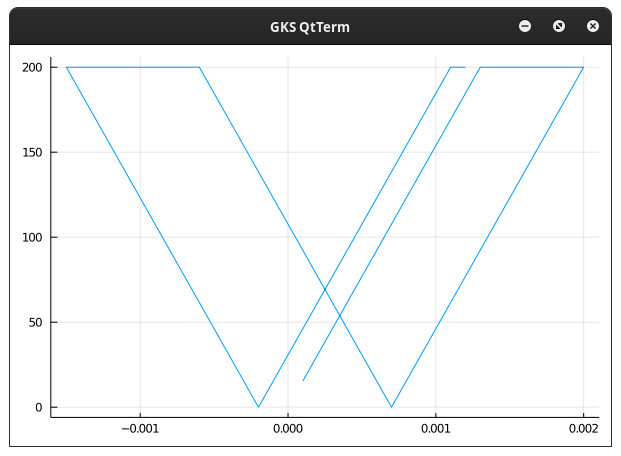

SmallStrainPlastic Documentation
SmallStrainPlastic is a library that aims to simplify the addition of different plastic models. The usage may be for a material point to judge the behaviour of a plastic model or to in a finite element model to simulate the behaviour of a plastic material.
The assumptions made while developing the library are the following:
The flow rule for plastic strain is considered to be:
𝛆̇ᵖ = λ̇ Θ(𝛔, 𝐪)
The flow rule for internal variable is considered to be:
𝛂̇ = λ̇ 𝐡(𝛔, 𝐪)
The stress is considered as:
𝛔 = ℂ:(𝛆 - 𝛆ᵖ)
The hardening variable is considered as:
𝐪 = - 𝓗(𝛂)
Special Unicode characters using eg: "\bb", "\bf", or "\bsrc*" are used to define functions. It is highly recommended such unicode characters are avoided when defining internal variables to avoid confusion.
Plasticity Model
SmallStrainPlastic.PlasticModel — TypeA plasticity new plasticity model can be defined by defining the following functions:
Yield Function:-
𝒇(σ_voigt::Array{Float64, 1}, q::Array{Float64, 1}, params::ModelParams)The partial of Yield Function with respect to stress, ∂𝒇/∂𝛔:-
∂𝒇_∂𝛔(σ_voigt::Array{Float64, 1}, q::Array{Float64, 1}, params::ModelParams)The partial of Yield Function with respect to hardening variable, ∂𝒇/∂𝐪:
∂𝒇_∂𝐪(σ_voigt::Array{Float64, 1}, q::Array{Float64, 1}, params::ModelParams)The function in the flow rule for the plastic strain, 𝛆̇ᵖ = λ̇ 𝚯(𝛔, 𝐪) :-
𝚯(σ_voigt::Array{Float64, 1}, q::Array{Float64, 1}, params::ModelParams)The partial of plastic strain flow rule function with respect to stress, ∂𝚯/∂𝛔:-
∂𝚯_∂𝛔(σ_voigt::Array{Float64, 1}, q::Array{Float64, 1}, params::ModelParams)The partial of plastic strain flow rule function with respect to hardening, ∂𝚯/∂𝐪:-
∂𝚯_∂𝐪(σ_voigt::Array{Float64, 1}, q::Array{Float64, 1}, params::ModelParams)The function in the flow rule for the internal variable 𝛂̇ = λ̇ 𝐡(𝛔, 𝐪):-
𝐡(σ_voigt::Array{Float64, 1}, q::Array{Float64, 1}, params::ModelParams)The partial of plastic strain flow rule function with respect to stress, ∂𝐡/∂𝛔:-
∂𝐡_∂𝛔(σ_voigt::Array{Float64, 1}, q::Array{Float64, 1}, params::ModelParams)The partial of plastic strain flow rule function with respect to hardening, ∂𝐡/∂𝐪:-
∂𝐡_∂𝐪(σ_voigt::Array{Float64, 1}, q::Array{Float64, 1}, params::ModelParams)If the evolution of the hardening variable 𝐪̇ is defined as 𝐪̇ = -𝓗(𝛂), then the function it is dependent on can be written as:-
𝓗(σ_voigt::Array{Float64, 1}, q::Array{Float64, 1}, α::Array{Float64, 1}, params::ModelParams)For ease of use, defining a function that saves the stiffness tensor is also made available :-
ℂ(σ_voigt::Array{Float64, 1}, q::Array{Float64, 1}, params::ModelParams)If the hardening variable 𝐪̇ is defined as 𝐪̇ = -𝓗(𝛂), then an equivalent to stiffness tensor defined as ℂ = ∂𝛔/∂𝛆ᵉ, we can defined as 𝔻 = -∂𝐪/∂𝛂 = ∂𝓗(𝛂)/∂𝐪 :-
𝔻(σ_voigt::Array{Float64, 1}, q::Array{Float64, 1}, params::ModelParams)State of Plasticity
SmallStrainPlastic.State — TypeThis structure saves the state of the material, meaning it's plastic strain and hardening variable.
SmallStrainPlastic.createStateDict — FunctionThis function creates a Dictionary of type State to store the state of the material, meaning it's plastic strain and hardening variable.
stateDict = createStateDict()SmallStrainPlastic.updateStateDict! — FunctionThis function updates the StateDict according to the passed data of ϵᵖ and α for a specific element number and an integration point within the given element.
updateStateDict!(ϵᵖ, α, stateDict, elementNo, integrationPt)SmallStrainPlastic.getState! — FunctionThis function gets the state of the material, meaning it's plastic strain and hardening variable. If they exist in the Dictionary for the given material/integration point in the given element, it updates the data with the available data in stateDict. If they don't exist, it just fills the state varibles with zeros.
getState!(ϵᵖ, α, stateDict, elementNo, integrationPt)Easier Finding of Jacobians
SmallStrainPlastic.denseJacobian! — FunctionWhen working with plastic models it many times it becomes difficult to find the analytically jacobian of a vector function. With denseJacobian we try to make that easy to do. It uses finite difference to do this. Finite Differences are far from the best solution to find jacobians but are the easiest to implement. Hence this solution.
denseJacobian!(jacobian::Array{Float64,2}, f::Function, x::Array{Float64,1})Here "jacobian" must have row size equal to length of vector returned by Function "f" and column size equal to length of vector "x"
SmallStrainPlastic.denseJacobian — FunctiondenseJacobian is an easier to use version of denseJacobian!. This is less efficient than denseJacobian!. Hence whenever possible denseJacobian! must be used.
Return Mapping Alogrithm
SmallStrainPlastic.returnMapping! — FunctionThis function is responsible for executing the return mapping algorithm. It does so by calculating the evolution of the plastic strain using the Closest Point Projection method. The following formulations are used
Here's an equation: $d(\Delta\lambda) = \frac{f^k - \begin{bmatrix}\partial f^k/\partial \sigma & \partial f^k/ \partial q\end{bmatrix}\begin{bmatrix}A\end{bmatrix}\begin{bmatrix} R \end{bmatrix}} {\begin{bmatrix}\partial f^k/\partial \sigma & \partial f^k/ \partial q\end{bmatrix}\begin{bmatrix}A\end{bmatrix}\begin{bmatrix}\Theta \\ h \end{bmatrix}}$
where:
$\begin{bmatrix}R\end{bmatrix} = -\begin{bmatrix} \epsilon^p_{n+1} \\ \alpha_{n+1} \end{bmatrix} +\begin{bmatrix} \epsilon^p_{n} \\ \alpha_{n} \end{bmatrix} +\Delta\lambda\begin{bmatrix} \Theta(\sigma_{n+1}, q_{n+1}) \\ h(\sigma_{n+1}, q_{n+1}) \end{bmatrix}$ $\begin{bmatrix}A\end{bmatrix}^{-1} = \begin{bmatrix} \bm{C}^{-1} + \Delta\lambda \frac{\partial \Theta}{\partial\sigma_{n+1}} & \Delta\lambda \frac{\partial \Theta}{\partial q_{n+1}} \\ \Delta\lambda \frac{\partial h}{\partial\sigma_{n+1}} & \bm{D}^{-1} + \Delta\lambda \frac{\partial h}{\partial q_{n+1}} \end{bmatrix}$
The Strain 𝛆ᵖ and the internal variable 𝛂 are updated as,
$\begin{bmatrix}\Delta \epsilon^p \\ \Delta \alpha \end{bmatrix} = \begin{bmatrix}\bm{C}^{-1} & 0 \\ 0 & \bm{D}^{-1} \end{bmatrix} \begin{bmatrix}A\end{bmatrix} \begin{bmatrix}\Theta \\ h \end{bmatrix} d(\Delta\lambda)$
An example using J2 Plastic Model
using SmallStrainPlastic, Plots
function testJ2()
σ_y = 200.0
E = 200e3
ν = 0.3
plasticVars =SmallStrainPlastic.initPlasticVars(SmallStrainPlastic.j2Model)
plasticVars.C = SmallStrainPlastic.createVoigtElasticTensor(E, ν)
params_J2 = SmallStrainPlastic.initParams_j2(σ_y, 0.0)
𝒑Array::Array{Float64, 1} = zeros(0)
𝒒Array::Array{Float64, 1} = zeros(0)
𝒆Array::Array{Float64, 1} = zeros(0)
𝒆ₛArray::Array{Float64, 1} = zeros(0)
for i ∈ 1:82
if (i<=20)
plasticVars.ϵ[1] += 1e-4
elseif (i>20 && i<=55)
plasticVars.ϵ[1] -= 1e-4
else
plasticVars.ϵ[1] += 1e-4
end
SmallStrainPlastic.checkPlasticState!(plasticVars, SmallStrainPlastic.j2Model, params_J2, 1, 1)
𝒑, 𝒒 = SmallStrainPlastic.get_𝒑_𝒒(plasticVars.σ_voigt)
push!(𝒑Array, 𝒑)
push!(𝒒Array, 𝒒)
𝒆, 𝒆ₛ = get_𝒆_𝒆ₛ(plasticVars.ϵ)
push!(𝒆Array, 𝒆)
push!(𝒆ₛArray, 𝒆ₛ)
end
plot(𝒆Array, 𝒒Array, legend=false)#, seriestype = :scatter)
endYou should get a plot like this: 